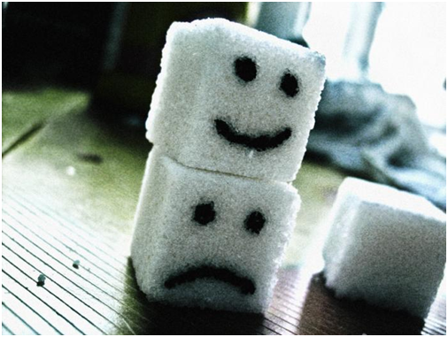
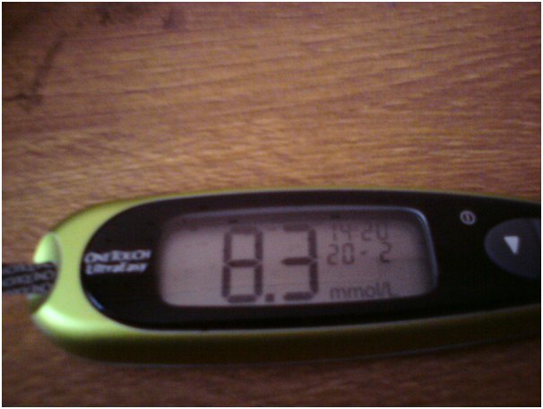
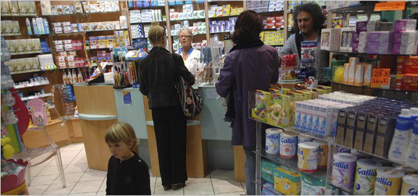
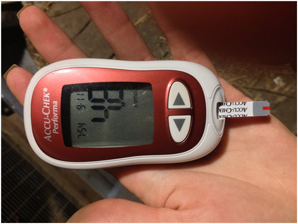
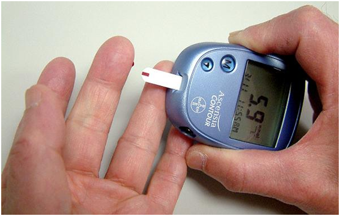
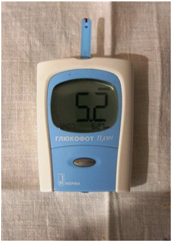
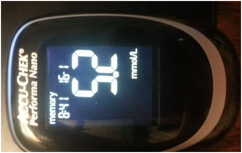
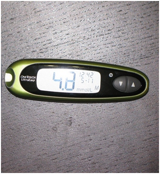

VÁLLALKOZÁS a BETEGSÉGEN:
Meg fogja tudni a CUKORBETEGSÉGRÖL mindazt,
ami évek óta rejtve van
Kategória: Hasznos cikkek a cukorbetegszámára Közzétett:
Szia! Király András vagyok.
Még soha nem írtam véleményeket, de úgy döntöttem, hogy írok olyan cukorbetegek számára mint én. Mert az orvosi hibák miatt majdnem elvesztettem az életemet.
Tíz évvel ezelőtt diagnosztizálták a 2. fokú cukorbetegségemet. Tíz évvel ezelőtt diagnosztizáltak a 2-es típusú cukorbetegséget. Mindig fáradtnak éreztem magam, nem tudtam rendesen enni, arra kényszerítettem magam, hogy csak egészséges ételt egyek . Ilyen munka mellett elég nehéz. Emellett folyamatosan figyelnem kellett a vércukorszintemre.
A napom a cukor mérésével kezdődött. Havi gyógyszerekre több ezer eurót költöttem. És ez szakácsi fizetésböl! Katasztrófa! Továbbá a magyarországi tabletták árának nagysága a közelmúltbeli események miatt nőtt.
El kellett adnom az autót, hitelt kellett fizetnem a kezelésért és a tesztcsíkokért. Mjadnem a sírba mentem, és mindenemet elvesztettem. Állandóan hányingerem volt, és néhány hónap múlva kövér lettem. Ez nagy teher lett a családom számára.Féltem attól is, hogy a gyerekeimnek is 2. fokú cukorbetegsége lesz.
-Azt hittem hogy ennél már nem lehet rosszabb, amígy egy nap kockázatra esett az egész életem.
Vettem egy új cipőt, ami úgy dörzsölte a lábamat, hogy hólyagok keletkeztek rajta. Egy idő után gyógyulhatatlan sebekké változtak. Nem éreztem fájdalmat, de nehéz volt járni, égő érzés volt a lábamban, ezért elmentem az orvosomhoz. Az orvos azt mondta, hogy nagy valószínűséget lát a gangréna fejlődésre, ami egy dolgot jelent – elveszíthetem a lábam!
Attól amit hallottam, hideg verejtékbe dobott. Tudtam, hogy a gangréna meglehetősen gyakori a cukorbetegeknél, de nem gondoltam, hogy én magam is szembenézem ezzel. Hogyan élhetek és dolgozhatok láb nélkül? Az orvostól nagy félelemmel mentem el, és csomó új gyógyszer listával.
Ugyanazon a napon este Skype-on telefonált egy régi iskola barátom, Amerikában él. Meghallgadta a problémáimat az egészséggel kapcsolatban , és azt hogy már alig maradt pénzem a gyógyszerekre Aztán elmondta, hogy Amerikában hasonló helyzet alakul ki a gyógyszer-piacon. Orvosaik azt javasolják, hogy olyan drága gyógyszereket vásároljanak, amelyek csak súlyosbítja az egészségüket. Mert MINÉL TÖBB A BETEG, annál TÖBB SZÜKSÉG VAN A GYÓGYSZERRE . És értékesítésük őrült jövedelmet hoz a gyógyszeripari vállalatoknak . Úgy gondolom, hogy a MAGYARORSZÁG ebben a kérdésben sem kivétel, csak azért, mert mindenki óvatosan hallgat róla.
Megkérdeztem a barátomat, nem tudja-e, hogy hogyan szokták kezelni a cukorbetehséget Amerikában, azt mondta hogy mindenki már feladta a szokásos gyógyszereket, és egy másik gyógyszert használnak ami természetes összetevőkből áll. A tabletákkal szemben többszörösen hatékonyak, és nem okoznak ártalmat a szervezetnek. Szinte mindent lehet helyettesiteni az – „” által. Magyarországon még nem hallottam erről a gyógyszerről, ezért kértem tőle egy linket
Megállapítottam, hogy " " szerves anyag por formájában. Fő összetevője az inulin, amely a Heliánthus tuberósus növényből származik. Évszázadokon keresztül használják a keleti gyógyászatban a vércukorszint normalizálására. Számos tanulmány után a modern tudomány bizonyította ennek a poliszacharidnak a hatékonyságát a 2-es típusú cukorbetegség elleni küzdelemben. És ami a legfontosabb, az inulin és az L-arginin kombinációja segít a hasnyálmirigy sejtjeinek helyreállításában, amelyek inzulint termelnek!

„” az egyetlen adalék, amely ezen a kivonaton alapul. A 2. fokú cukorbetegség esetén csökkenti a vércukorszintet, csökkenti vagy akár teljesen alhárítja. (A betegek 20%-nál)
"" ajánlott használni a meglévő gyógyszerterápiával kombinálva , és megelőzésként, ha fennáll a betegség kialakulásának veszélye.
Úgy döntöttem, hogy kipróbálom a "" -t, mert abban az időben nem volt semmi veszteségem, és megrendeltem közvetlenül a gyártó weboldaláról
Reggelente meleg vizet öntöttem a pohárba, majd hígítottam benne teáskanálni port, aztán kortyolgattam. Őszintén, nem hittem abba hogy segíteni fog, de... Egy héttel később észrevettem, hogy kevésbé fáradt voltam, fokozatosan többet ettem a kedvenc ételeimből. A vércukorszint mindig normál szinten volt („” előtt, böjt vércukorszintem 9.6 volt, két héttel később, teljes gyomorra – 5.4) a seb a lábamon úgy színtén megyógyult. Ráadásul fogytam, 4.5kg-ot.
Nem hittem az eredményeknek... Itt van – hogyan old meg a 2. fokú cukorbetegség problémáit. A fájdalom és a félelem eltűnt, azt eszek amit akarok. . Nincsenek aggodalmak az injekcíókkal és a mozgással kapcsolatban. NEM KELL EGY CSOMÓ TABLETTÁT SZEDNEM. A hamis gyógyszergyártók, és az úgynevezett „Szakértők” nélkül győztem le a betegséget.
Egyből elmondom, az „” csak az interneten kerül eladásra, mert az állam nem engedélyezi ezt az adalékanagot a piacon, és minden lehetséges módon próbálja csökkenteni értékesítését. Ne felejtsd el, hogy csak gyógyszergyártó vállalatok kezelnek téged gyógyíthatatlan beteg ként, téged látnak egy egész életen át tartó ügyfélnek.
Az „” megmenti azt a sok pénzt, emlyet a gyógyszergyártóknak kell fizetni. Figyelj arra hogy ne hamisítványt vásárolj, egyetlen hivatalos beszállító van Magyarországon, ő garantálja a minőséget.
Remélem, az én történetem hasznos lesz és több életet fog megmenteni. Légy egészséges!
Hozzászólások:
Köszönöm, hogy írtál. A férjem és én már elvesztettük a reményt ... Olvastam, rendeltem ezen a webhelyen. Néhány hét elteltével megvizsgálásra került - a 7,9-ről az inzulin 4,8-re esett!
- Én is azt akartam írni, gondoltam, hogy becsapás, amíg nem probáltam ki magam. Egy honapig használtam. A gyógyszer szedése előtt az inzulin üres gyomorra 9,8, egy hónappal később a teljes hasa esetén 5,9 volt. Éljek egészségesen!
Hello, a nevem Helga. Nem szenvedek cukorbetegségben. De az apám 15 évig 2-es típusú cukorbeteg. Mondja meg, hogyan foglalkozam ezzel a problémával? Nagyon szeretem az apámat, és sok évet kívánok neki, nem tudom, mit fogok tenni, ha hirtelen ... Segítsen, hogyan segítsek neki, nagyon hálás leszek
Próbáltam beadni étel előtt egy pohár meleg vizzel az -et. Nem szünteti meg a szokásos gyógyszereket, de a cukrot azt biztos hogy csökkenti!
Apámnak hasonló problémája volt, nem szedett inzulint, csak tablettákat. Meghallgatta az anyukámat, és mikor már nem érezte az újját a lábán, akkor elkezdett diétázni és szedni ezt a kiegészítőt.
Gazdasági eszközökkel! Adósságban voltunk fülig, drága költség a fiam gyógyitására. A munkahelyén a barátom ajánlotta, próbálja meg a -t. Nem hittem, hogy ez megváltoztatna valamit, de mivel az ördög nem viccelt. A fiam most egészséges. Képzelje el, 9,7-ből az inzulin 5,9-re csökkent!5.9!
Én is volt 2-es típusú cukorbetegséggel voltam, ez terhet jelentett a családnak. Az nővérem-orvos talált interneten, ahol részletesen ismertették a "-t" és annak pozitív hatását. Azonnal elrendeltük ezt a adalékanyagot , és visszatértem a normális életbe!
A bátyám 2-es típusú cukorbetegségben szenvedett. Kétségbeesettem, de megrendeltem. Az utolsó reménye valóra vált! A glükóz 2 órával étkezés után 9,8 volt, és egy hét múlva a 5,3 volt! Itt van a link , ahol megrendeltem az ""
Orvosként dolgozom egy magánklinikában. Felajánlották, hogy gyógyszereket áruéjak %-ért, de nem egyeztem bele. Anyám 2. fokú cukorbeteg volt, amíg nem találtam hatékony megoldást. Az eredmények a következők: az „” beadása előtt a glükóz – 8.7. Három hónap után – 5.9. Eleinte az étkezés előtt 2 órával mértünk aztán az étkezés után 2 órával. Szerintem hamarosan le mondunk az orvosságról.
Az orvosok hüllők !!!!! Mennyi ideig lehet drágább tablettákat felírni, ha olcsó analógok vannak ?!
Hol voltál korábban a cikkel ... Cukorbetegségem van ... :(
Ne légy kétségbe! Nekem az «» segít. Tapasztalatból beszélek! Ezt a kiegészítést reggel beveszi a gyógyszerekkel, megelőzés képen és könnyebbé válik
És hogy kel szedni az ""-t?
Meleg vizet öntöttem a bögrébe, melegen hígították, majd hozzáadtam egy teáskanálnyi ""-t egy diával, kevertem és reggel ittam üres gyomorra. Egyszerű :)
És én a tea helyett reggel ittam)) Csökkenti az inzulin szintjét. Három héttel ezelőtt az reggel 7, 6 volt, és most mértem 5,2. Szóval így))
Ki szedte az ""-t, mondjatok el nekünk, mi az összetétele?
Elrendeltem, a csomagon a bejelentett részeként: Fibregam, inulin, citromsav, B6-vitamin, B1. Azt hiszem, minden hasznos rosszabb csak nem lesz.
Jó, hogy van egy ilyen lehetőség! Soha nem értettem, miért kellene gyógyszert vásárolni őrült áron, ha olcsó gyógyszerek vannak. Nyugdíjba megyek, különösen, hogy nem törődnek a drogériákban, ezért igen, jobb, ha ezeket az Aszculapiust fehér köpenyben hallgatnánk, de a fejével gondolkodnék
Megmutattam a barátomnak, orvosnak - az -t, olvasott, meglepődött, hogy Magyarországban általában eladnak! Azt mondja, hogy minden összetevő tényleg kedvező hatással van az egészségre és csökkenti az inzulin szintjét a vérben. Cukorbetegség esetén ezt az orvosság egy teljes készletet váltja fel.
Ó, írj, kérem, eredményket
Két hétig szedtem, 7.1-böl 4,8-ra csökkent. Határozottan folytatni kell!
P.S. Nagyon fontos számomra, hogy mit gondol a "" -ról. Ha megpróbálta, ossza meg a benyomásait az alábbi megjegyzésekben: